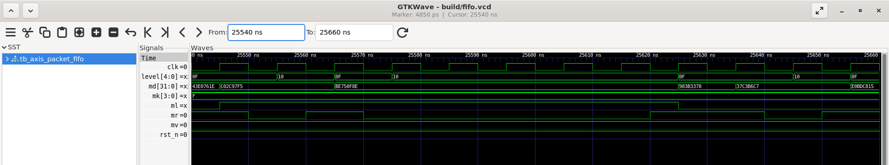

01 / RTL + VERIFICATION
AXI4-Stream FIFO
SystemVerilogThe challenge: preserve data and packet metadata through backpressure, pointer wrap and reset.
My contribution Designed a parameterized stream buffer and checked transfers with a scoreboard and formal safety properties.
12 runsSimulation regression
across four depths
across four depths
15 assertionsChecked with 3 assumptions
at 8-bit width, depth 4
at 8-bit width, depth 4
Bug injectionPop-without-ready caught
by simulation and formal
by simulation and formal
Formal scope: the documented configuration and harness assumptions; not every parameter value or full AXI conformance.

Read the waveform
Between 25,570 and 25,620 ns, mr=0 while mv=1. The payload stays at md=BE750F8E, mk=F, ml=1. READY rises at 25,620 ns; acceptance occurs at the rising edge at 25,625 ns. This is one observed interval, not a proof of all behaviour.
The signal-list values refer to an old cursor outside this window; the traces show the selected interval.